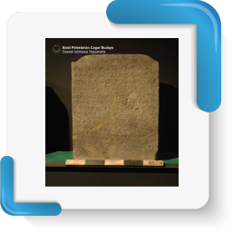
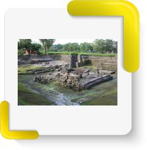
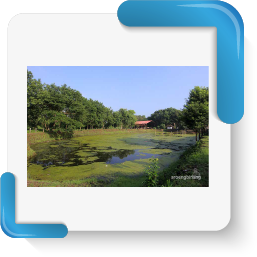
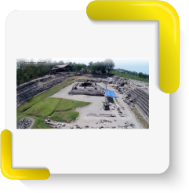
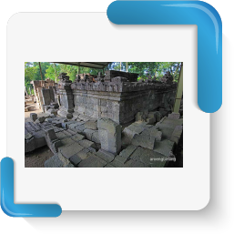
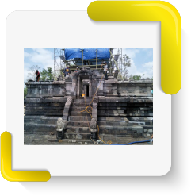
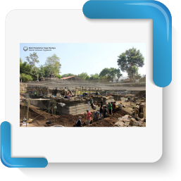

Sejarah
-
Lokasi
Candi Kedulan terletak di Dusun Kedulan, Desa Tirtomartani, Kecamatan Kalasan, Sleman, Daerah Istimewa Yogyakarta, berada pada koordinat 7° 44’ 28” LS dan 110° 28’ 5” BT, dengan ketinggian 168, 45 meter di atas permukaan air laut. Candi Kedulan ditemukan dalam keadaan runtuh dan terpendam material vulkanik yang terbawa oleh lahar gunung Merapi. Berdasarkan hasil kajian stratigrafi, Candi Kedulan telah tertutup lahar setebal 8 meter yang tersusun atas 15 lapisan sedimen.
-

859 Masehi
Belum ditemukan data tentang kapan tepatnya Candi Kedulan ini didirikan, namun berdasarkan tulisan pada prasasti yang ditemukan di sekitar candi yaitu prasasti Sumundul dan prasasti Pananggahan, tertulis angka tahunnya 791 saka atau 859 M yang dijadikan kerangka waktu pendirian Candi Kedulan.
-

1993
Candi Kedulan pertama kali ditemukan pada 24 September 1993 oleh para pekerja yang sedang menggali pasir. Mereka menemukan susunan blok-blok pada kedalaman tiga meter. Salah satu pekerja bernama Sriyanto, warga Wanabaya, Jogonalan, Klaten, kemudian melaporkan temuan tersebut kepada Balai Pelestarian Cagar Budaya Daerah Istimewa Yogyakarta. Eskavasi penyelamatan terhadap Candi Kedulan dilakukan pertama kali pada tanggal 15 s.d. 24 November 1993.
-

2001
Dilanjutkan kegiatan eskavasi, pengumpulan data dan anatilosis
-
2002
Studi kelayakan pada tahun 2002 Hasilnya kegiatan: a) menemukan komponen batu candi sebanyak 85%; b) bentuk candi dapat diketahui; c) rekomendasi bahwa Candi Kedulan layak dipugar.
-
2004
Studi teknis pada tahun 2004. Hasil kegiatan: a) menentukan teknis pelaksanaan pemugaran, b) menetapkan jumlah anggaran biaya untuk pemugaran, dan c) menentukan rencana penataan lingkungan Candi Kedulan.
-

2008
pada saat musim penghujan candi kedulan selalu digenangi air sedalam 6 meter dilakukan kajian penanganan genangan air dan direkomendasikan untuk pembuatan gorong gorong kearah selatan sejauh 220m
-

2015
Penemuan Prastasi panjang 20 baris tulisan. Pengumpulan data dan pembongkaran candi induk
-

2017
Pengumpulan data dan pembongkaran candi induk
-

2018
Kegiatan pemugaran candi induk Kedulan dilaksanakan mulai 5 Januari 2018 sampai dengan 11 Desember 2018.Kegiatan ini melanjutkan pengumpulan data dan pembongkaran candi induk Candi Kedulan yang dilaksanakan pada tahun 2015 dan 2017. Kemudian dilanjutkan dengan Studi Kelayakan
-

2019
Kelanjutan dari kegiatan pemugaran pada tahun 2018 dengan memugar tiga candi perwara